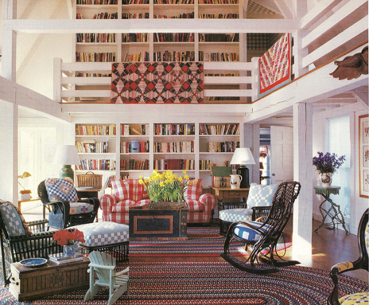

.png)
.PNG)
.PNG)
.PNG)
.PNG)
.PNG)
.JPG)
.JPG)
.PNG)
.PNG)


Welcome to Day 2 of our farmhouse week! Yesterday we drooled over a number of white farmhouse exteriors. Well today you will need to put on your shades because we are going to look at some very colorful rooms.
house and garden via anthonybaratta.com
Growing up, I adored the work of William Diamond and Anthony Baratta. There was no middle ground with their work. You either loved it or hated it. I was a lover. This dynamic duo was fearless in their use of motifs, color, and pattern….so much so that many designers made fun of them, but it didn’t slow them down one little bit. In 30 years, they were featured in over 70 magazines – frequently on the cover, from House Beautiful to Traditional Home to House and Garden. You name it – they were there.
Many of their homes were very nautical in style, but there is a large body of their work that features rural themes…quilts, farm animals, weather vanes, barns. It is for this reason that I wanted to share some of their rooms with you while we are looking at farmhouses. I know these are not your typical farmhouse rooms, but they have too many “farmhouse elements” not to include them here. Plus these rooms are just so darn fun! 🙂
We’ll start with a classic entry that could be in a farmhouse. I’d put those horse prints in my farmhouse. Wouldn’t you?
And this mudroom? Don’t you like the wood paneling and that huge bench? anthonybaratta.com
anthonybaratta.com
Let’s take a look at some of their other entryways. The walls with all their trim here are stunning.
How about this collection of weathervanes for your farmhouse foyer?
(from the same home as above)
Here is the hallway next to this foyer. quintessenceblog.com
quintessenceblog.com
There are farmhouse elements in the halls of this home here… quintessenceblog.com
quintessenceblog.com
and here. quintessenceblog.com
quintessenceblog.com
Diamond and Baratta stopped construction on this house (a different one) when they saw the planned staircase. It was a single staircase that would have split the living area in half. They pursuaded the homeowners to construct these double stairs instead. Note the weathervane motif used again.
Here is a more formal living room in one of their houses. Every farmhouse needs a rooster on the mantle, right?
Now I will admit that this dining room is a bit over the top with its mural painted walls. It’s a bit much even for me.

And this kitchen? Well, I do love red, and I do love checks, but I could only take small doses of this room at a time.

We’ll finish off our Diamond & Barrata farmhouse rooms with a couple of bedrooms. This is the master bedroom from the Connecticut home that most of these rooms are in.
I had this very same wallpaper in the kitchen of the first home we built. How could you ever be sad waking up in this bright and sunny bedroom?
I think the “happy” factor is what made me love their rooms so much when I was younger. If I were furnishing a farmhouse today, I think I would use small ideas from their work..not whole rooms. I would tire of the overdose of pattern in some of these spaces, but you have to give them credit. They are a genius when it comes to attention to detail!
William Diamond has recently retired, and Anthony Baratta now has the design business. He has published 2 books of their work showing many of their rooms.

All-American: The Exuberant Style of William Diamond and Anthony Baratta
(These are Amazon Affiliate links.)
Remember that in honor of Farmhouse Week here I am doing a drawing for a set of muscadine products from Callaway Gardens on Saturday evening. Check out the Day 1 post for all the details.
So, could you live in one of the Diamond & Baratta rooms, or would it be too much for you? Leave me your thoughts in the comments below, and you will be entered in the drawing for the delicious treats!
Until next time…

updated Sat. 7/21 *****giveaway is now closed*****


.PNG)
I have been lucky enough to be involved with most of their upholstery work for over 30 years. I can tell you from a work room standpoint that when a sofa is in a bright yellow rooster fabric sometimes it’s hard to see it, yet once the rooms get pulled together, it’s just sheer bliss.
Kelly,
Really enjoy all your blogs,I know it takes a lot of time. They are as good or better then many magazines I get, keep it up. Amelia Island was wonderful,makes me want to go. Thanks!
Kelly,
I confess, these rooms probably have more color then I could live with but they are fun and do reflect a “country” style and appeals to me. The Anthony Baratta room, 4th image, is one of my favorite all time rooms. I’m a equine fan and this foyer/staircase is so wonderful.
Great fun visiting farmhouses with you! 🙂
Karen
I could easily live in either one! Spectacular!!!
I like most of these, but the mural and the kitchen are a little much. Maybe without the stenciled floor?
Wow! Those are some bold rooms! For the most part, the mix of colors and patterns are a bit much for me. However, some of those pieces would be stunning accents…and I LOVE the trimwork and the double stairway. Swoon!
I do love the colors, but just not for my house. I have always tended more toward the subtle side of decorating. Thanks!
Hi Kelly! Still lovin’ this series. You’re really getting my farmhouse juices flowing! I love the horse prints and all of the color with board and batten. I told my readers about your series today! I wanted to share it since I’m loving it so much!
Hi Kelly
…and once again you post some spectacular photos of very inspiring ideas. Personally I couldn’t live with so much going on around me (I think my mind is just too busy without all of that interfering!). I love the idea of the two staircases, so dramatic! – I can totally see how it makes a huge difference from just the one staircase. Love the double Wolf stoves in the kitchen – I would put up with all the busyness around me if it meant that I could have those!
Thanks again for a great post!
Cath
Thank you so much for introducing me to Diamond & Barrata! I love when I have a new designer to start researching. I say bring on the color!!!! Although the neutral rooms might look great – they are really hard to live in!!!
I really like that blue plaid wall paper between the wooden beams. The rooms that are high in pattern and contrast are lovely. I realize the white rooms photograph better, but I think the high pattern rooms live better and provide the interest my eye needs for the everyday.
The 4th and 6th image are stunning. Love the paneled molding in the entry along with the horse prints, staircase and stunning floors!!
All those rooms are just stunning. I never thought that i liked farmhouse style, But boy, have a had a change of heart! Wish my home could look like just one of those pretty rooms!
Don’t you just love the photo with the double staircase? I also thought dedicating the wall the weathervanes was spectacular. I so want to live in one of these homes.